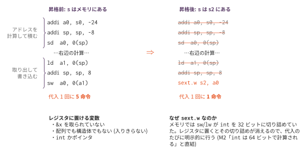

レジスタ割り当て — 変数をメモリから追い出す
今日のゴール
局所変数をメモリではなく callee-saved レジスタに置く。 変数への代入が5命令から1命令になる。 そして「割に合わない昇格」があることを、測って発見する。
この回の位置づけ
| 項目 | 内容 |
|---|---|
| 必須の前提 | コマ15（完成した final/mycc.py）、O1（測定基盤。golden.py が measure.py と O1_measure/bench/ を使う） |
| 推奨の前提 | O3（命令選択）。実質必須に近い。資料の測定値は O1 の全構成の基準表の +isel 列を基準にしているので、O3 が無いと表と突き合わせられない |
| 改変しない | mycc.py、scaffold/、optcc.py |
| 編集する | regalloc.py |
| 完了条件 | check.py の全 Step が PASS になり、golden.py が fixed17 全通と静的・動的の命令数削減を報告する |
| コマ数 | 2 |
| 備考 | 最適化発展シリーズの第4回。このシリーズでいちばん効果が大きい。アセンブリのパスではなく、コード生成器へのパッチである。コマ1は Step 1〜4、コマ2は Step 5〜6 |
2コマの区切りは次のとおりである。
| コマ | やること | 到達点 |
|---|---|---|
| 1 | Step 1〜4 | golden.py が通り、fib_rec だけ遅くなることが測れる |
| 2 | Step 5〜6 | fib_rec の悪化が消える |
ここまでで分かっていること
O1 の全構成の基準表で数えたとおり、 素の出力 1,183命令のうち 587命令（49.6%）が push/pop の往復である。 なぜそんなに多いのか。変数を1つ読むだけで、こういうコードが出ているからである。
addi a0, s0, -24 # s のアドレスを計算して
addi sp, sp, -8 # スタックに積んで
sd a0, 0(sp)
... # 右辺を計算して
ld a1, 0(sp) # アドレスを取り出して
addi sp, sp, 8
sw a0, 0(a1) # ようやく書き込むs がレジスタに入っていれば、これは1命令で済む。

なぜアセンブリではなくコード生成器を触るのか
O3・O7 は、出来上がったアセンブリを行単位で書き換えるパスだった。 今回はそれができない。
int x;
int *p;
p = &x; // x のアドレスが要る → x はメモリに実体が必要&x が使われているかどうかは AST を見ないと分からない。
アセンブリになった後では、addi a0, s0, -24 が「アドレスを取ったから」なのか
「値を読むついでに出ただけ」なのか区別できない。
そこで今回は、B2（レジスタスタック）と同じくコード生成器にパッチを当てる。
optcc.py --regalloc が regalloc.py の patch() を呼び、
codegen と gen_func を差し替える。
mycc.py は1行も書き換えない。
差し替えは patch() の中で完結させる。
レジスタに置ける変数
| 条件 | 理由 |
|---|---|
&x を取られていない |
アドレスを取るなら、メモリ上に実体が要る |
| 構造体でない | レジスタに入りきらない |
int かポインタ |
8バイト以内のスカラー |
char を外しているのは、8ビットへの切り詰めを1命令で書けないためである
（基本命令セットに sext.b が無い）。
なぜ callee-saved（s1〜s11）なのか
RV64 の呼び出し規約では、t0〜t6 と a0〜a7 は
呼ばれた側が自由に壊してよい（caller-saved）。
変数をそこに置くと、関数を1回呼ぶだけで値が消える。
s1〜s11 は呼ばれた側が元に戻す義務を負う（callee-saved）。
だから呼び出しをまたいでも値が残る。
代わりに、自分がその義務を負う。プロローグで退避し、エピローグで復帰する。
main:
...
sd s1, -40(s0) # 呼び出し元の s1 を預かる
...
.L1:
ld s1, -40(s0) # 返す前に元へ戻す
...
retこれを忘れると静かに壊れる。 自分のテストは通るのに、 呼び出し元の変数が書き換わる。原因を追うのが難しい種類のバグである。
int の切り詰め — S2 との接続
int の変数は、これまで sw（32ビット書き込み）と lw（32ビット読み出し）を
通っていた。つまりメモリを通るたびに32ビットへ切り詰められていた。
レジスタに置くと、この切り詰めが起きなくなる。
S2 で見たとおり、この処理系の int 演算は64ビットで行われるので、
切り詰めが消えると桁あふれの挙動が変わってしまう。
そこで代入のたびに明示的に切り詰める。
sext.w s2, a0 # a0 の下位32ビットを符号拡張して s2 へポインタは64ビットなので mv でよい。
実装（コマ1）
| Step | 実装対象 | 内容 |
|---|---|---|
| 1 | escaped_vars |
AST を歩いて &x を集める |
| 2 | promotable |
上の3条件で絞る |
| 3 | emit_var_read / emit_var_assign |
読み書きの生成 |
| 4 | save_restore |
退避と復帰 |
worth_promoting は、コマ1では return list(names)（全部昇格）にしておく。
emit_var_assign では、右辺を cg.codegen(node.rhs) で生成する。
元の codegen を直接呼ぶと、右辺の部分木にパッチが効かない。
found = i; // i がレジスタにあるのに、古いメモリから読まれるfixed17 の f06_break.c がこれを検出する。
昇格した変数への前置 ++/-- も patch() が横取りしている（提供コード。
実装 Step は増えない）。昇格した変数の実体はレジスタにしかないので、
mycc.py の PreInc が使う「アドレスを取る → load → +1 → store」の経路を
そのまま通すと、スタック上の古い値を読み書きして静かに壊れる。
addiw s1, s1, 1 # int の ++ は sext.w と同じ「32ビットに切り詰める」慣例
addi s2, s2, 4 # ポインタの ++ は指す先のサイズだけ進む
mv a0, s1 # 前置 ++ の値は「新しい値」lvalue への経路（今回は前置 ++）が増えたら、昇格機構もその経路を
追随する必要がある —— 上の found = i; の罠と同根の問題である。
fixed17 の f17_incr.c がこれを検出する。
測ってみると（コマ1: 全部昇格）
「前」は O1 の全構成の基準表の +isel 列である
（この回の効果は isel をかけた状態を基準に測る）。
ベンチマーク 静的:前 後 削減 動的:前 後 削減
bubble 301 264 12% 20566 18824 8.5%
fib_rec 73 75 -3% 69061 73007 -5.7% ← 遅くなった
loop_sum 65 49 24% 7038 5032 28.5%
matmul 411 344 16% 24606 21589 12.3%
strops 225 192 14% 69066 59877 13.3%
合計 1075 924 14% 190337 178329 6.3%loop_sum は 28.5% 速くなった。ループの中の代入が2つとも1命令になったからである。
bubble と matmul の a は malloc 領域を指すポインタ変数なので、これも昇格する。
配列宣言の無いこの言語では、まとまったデータは常にポインタ経由で触るため、
「レジスタに入りきらないデータ」であってもその入り口はレジスタに置ける。
しかし fib_rec だけ遅くなっている。
なぜ fib_rec は遅くなったのか
int fib(int n) {
if (n <= 1) { return n; }
return fib(n - 1) + fib(n - 2);
}n は一度も代入されない。読まれるだけである。
昇格の利得は「代入が安くなること」で稼いでいた。
読み出しは、メモリからなら lw a0, -24(s0) の1命令、
レジスタからなら mv a0, s1 の1命令 —— 同じ1命令である。得がない。
一方、費用は確実にかかる。fib は再帰で何万回も呼ばれ、そのたびに
sd s1 と ld s1 の2命令を実行する。
利得: 代入 0回 × 4命令 = 0
費用: 呼び出しのたびに 2命令割に合っていない。
実装（コマ2）
| Step | 実装対象 | 内容 |
|---|---|---|
| 5 | assign_counts / has_call |
代入回数と、呼び出しの有無 |
| 6 | worth_promoting |
費用対効果で選ぶ |
呼び出しを含まない関数(葉関数) → 退避が要らない → 全部昇格してよい
呼び出しを含む関数 → 退避の費用がある → 代入される変数だけ昇格する測ってみると（コマ2）
こちらの「後」が、基準表の +regalloc 列である。
ベンチマーク 静的:前 後 削減 動的:前 後 削減
bubble 301 264 12% 20566 18824 8.5%
fib_rec 73 73 0% 69061 69061 0.0% ← 昇格しない
loop_sum 65 49 24% 7038 5032 28.5%
matmul 411 344 16% 24606 21589 12.3%
strops 225 192 14% 69066 59877 13.3%
合計 1075 922 14% 190337 174383 8.4%fib_rec の悪化が消えた。合計の削減も 6.3% から 8.4% に増えている。
「やらない」という判断も最適化である。
まだ残っているもの
割り当て後の s = s + i はこうなっている。
mv a0, s2 # s を読む
addi sp, sp, -8
sd a0, 0(sp)
mv a0, s1 # i を読む
ld a1, 0(sp)
addi sp, sp, 8
add a0, a1, a0
sext.w s2, a0 # s へ書くadd の入力は結局 s2 と s1 である。
add a0, s2, s1 と書ければ、前の mv 2つと push/pop が丸ごと要らなくなる。
それが O6（コピー伝播と死コード除去）の仕事である。 この回が、次の回の材料を作っている。
発展課題
charも昇格する: 8ビットへの切り詰めをどう書くか。slli+sraiの2命令で書けるが、それでも得か- caller-saved を使い分ける: 呼び出しをまたがない変数は
t0〜t6に置けば 退避が要らない。「またぐかどうか」はどう判定するか（O5 の生存解析） - 12個以上の変数: 局所変数が11個を超える関数を書くと、レジスタが足りなくなる。 いまは宣言順に先着順で割り当てている。どれを優先すべきか
worth_promotingの閾値: いまは「代入が1回でもあれば」という単純な判定である。 ループの中の代入を重く見る（深さ×10 など）と結果は変わるか- B2 と組み合わせる: B2（レジスタスタック）は一時値を、O4 は変数をレジスタに置く。 両方かけるとどうなるか
コラム: 本物のレジスタ割り当ては「塗り分け」問題である。 教科書（タイガーブック11章）のレジスタ割り当ては、 干渉グラフ（同時に生きている変数どうしを辺で結んだグラフ）を作り、 隣どうしが同じ色にならないように k 色で塗り分ける（グラフ彩色）。 色がレジスタに対応し、塗れない変数はメモリへ追い出す（スピル）。
今回は「変数1つにレジスタ1つ」を先着順で配ったので、彩色は要らなかった。 干渉グラフを作るには「どの変数がどこで生きているか」が必要で、 それを求めるのが O5 の生存変数解析である。